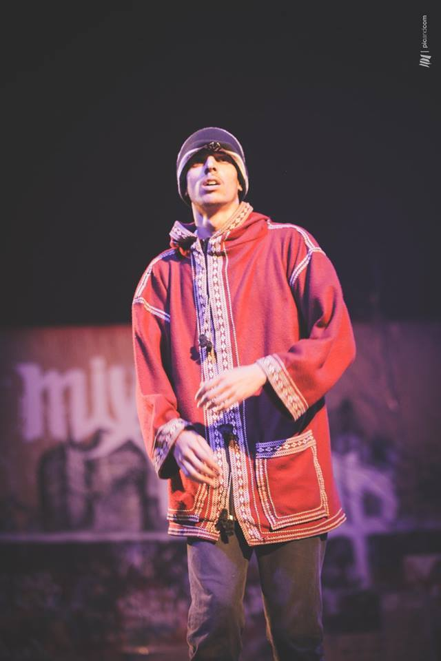

. He is a hip hop artist since 2003 ,
Born in Gafsa south Tunisia in 1992/10/22 , The name "The Falleg" represent he's born city "Gafsa" and he's crew "Fallaga Crew" .
Grown as an artist in the islands of "kerkennah" .
Also a member of the tunisian cutural collective "Beats5oun"

- this project started in 2020 with diffrent workshops given by teachers from Hayyou'Raqs assosiation the next part of the project was to coloborate with another artist (Twinlo) to create this piece that was performed at House of Culture Jbal jloud in october 14,2021
close up
M.W is a well known 1v1 battle in the tunisian hip hop scene , the falleg was able to go through the top 16 and and won the battle.
This was the second edition of the battle The Falleg and his partner Kampala took the win that day .
- It was 3 days festival in Nefza,Beja The Falleg was one of the judges in the main battle.
- It was an exchange battle that included diffrent styles,orgnized by the assosiation Art Solution there was a trophy for the best daner wich was given to The Falleg.
- This is where I started being serious about my career and found the support and love I needed from this family. "Fallaga" is a term used to designate an Algerian, Moroccan, and Tunisian fighter who fought for the independence of their country between 1952 and 1962, which was then part of French territory.
follow us